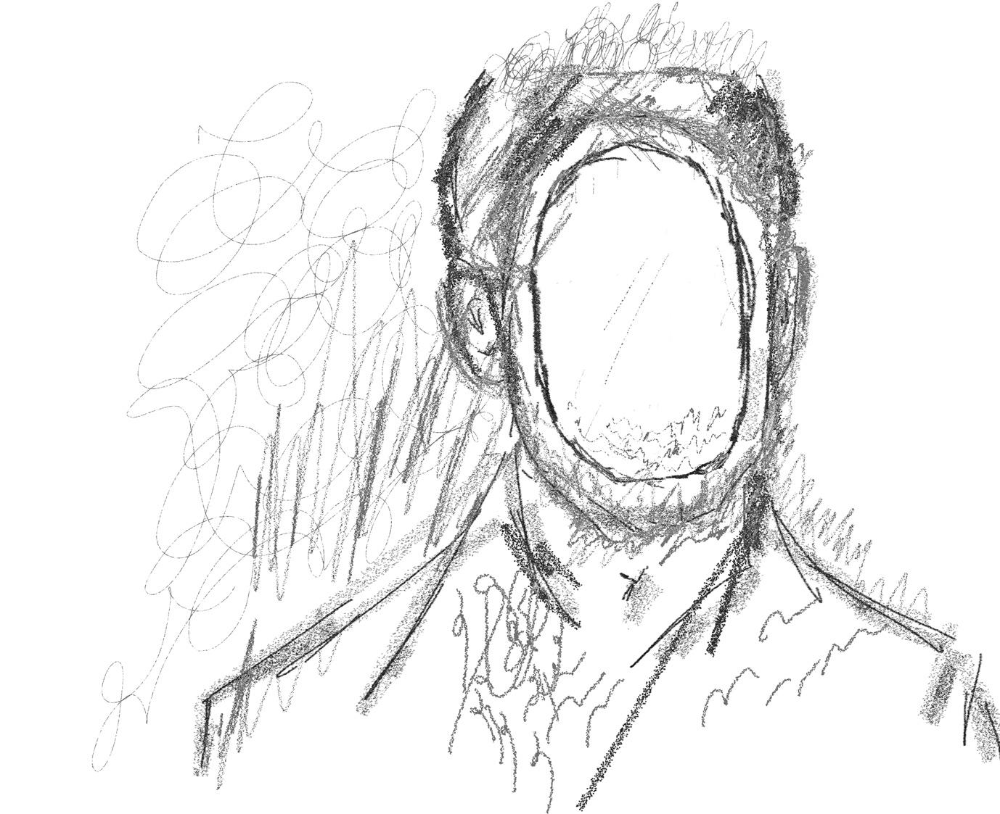

A la fi, LA SOCIETAT BURGESA ha aixecat
el seu mur anomenant-lo constructivisme,
situant escamots d’afusellament,
concedint que els pobres alcin el puny
i que cantin La Internacional
pensant que van a ser extingits
just abans de rebre la notícia
DÉU creà DÉU
poc després de les revolucions polítiques
de la separació entre l’església i l’Estat
suara les ombres llargues
i els propagandistes que
tothom va respectar
sense indicis
invàlids
aquest terraplè pastat
de víctimes que en
girar cua de rata
seguint l’ordenació
l’últim reclam que llegiren fou:
NO ERA MORT!
serens, sabien
la fressa
"Així com fan els malalts,
empren gemegosos de l’idioma
per assenyalar on és que els hi fa mal,
en lloc de transformar-se implacables en mots [...]"
Reiner Maria Rilke
NOU ORDRE
hem de saber QUE
els drets i el valor
de la realitat han estat
restituïts amb un
sol dit els sacrificis
engraparen tota la terra
en caure car ja coneixien
la veritat fins
i pot
extreure’s amb un polze,
i fonamentar-se en un sol
granet de solc
UNITAT
els colors són substancials,
també les línies, el llum,
tot “què” reté el procés
però és la participació
sonada del ben gruix humà
anc que vençut
que ho integra
en l’espai qualificat
que no havia resolt.
I ara que només
un índex arrabassa
manca el cos erecte
que ja arriba.
si han de tornar,
inflamats en la incomunicació
de la incomunicació
senzillament identificables
pel mutisme
com un contínuum
els termes de l’empra
pròpia promocional, sostrets
de les seves majors virtuts
han d’ésser rehabilitats:

Metadades
Noi del préssec
├─ nom_arxiu_enviat = "ENRAIG.txt"
├─ bateria_dispositiu = 000000000000000000000000,1%
├─ programa = "bloc de notes"
├─ estat_mental = "rentaclosques"
├─ variables_entorn:
│ ├─ input_01 = "sincrotron"
│ ├─ input_02 = "cefalòpods"
└─ paraules_esborrades:
└─ dump_01 = "l'obra d'un feixista"